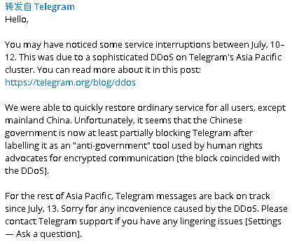

↓↓↓↓↓下面是个图片↓↓↓↓↓

主旨大意：7月10-12日发生了一场针对东亚结点的DDoS。除了中国大陆地区以外已恢复正常服务。目前来看因为最近发生事情的原因，中国政府已将该软件部分屏蔽。（或许与 DDoS 有关）。其余地区业已恢复正常功能。其他问题请询问 Telegram 志愿者。
UPDATE: 就目前状况来看，联通的连接效果较好，Web、cli两个连接方式已经废掉，只能通过标准客户端连接。